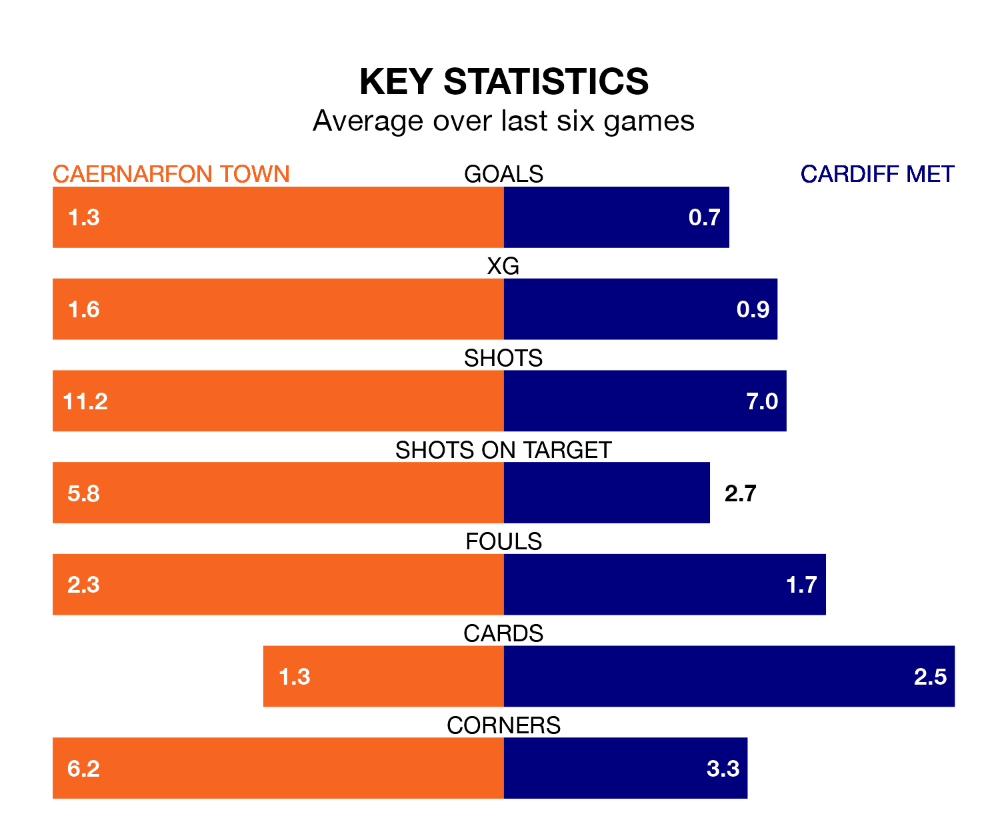

Cardiff Met travel to the Oval for Saturday's early match against Caernarfon Town looking to bounce back from defeat last time out in the Welsh Premier League.
The Archers, who sit zero in the league after 28 games, fell to a 1-0 home defeat to Bala Town on March 16.
They face a Caernarfon side who picked up a win in their last match, a 2-1 victory against Connah's Quay, and who sit fourth in the table.
Caernarfon are in mixed form in the Welsh Premier League, with two wins and three draws from their last six games.
With no wins and two draws over that period, Cardiff's form is much worse – they have taken two points from 18, compared to Town's nine.
With 32 goals in 28 games so far this season, the Archers are the league's-2th-lowest scorers with 1.1 goals per game. And they are conceding more than average, letting in 51 goals at a rate of 1.8 per game.
The Canaries, meanwhile, are above average scorers, with 1.7 goals per game, compared to a league average of 1.5. They have conceded 1.9 goals per game.
In the last 10 years, Caernarfon and Cardiff have played each other on 15 occasions. Caernarfon won 11 of them, Cardiff two, and they drew twice.
On average, the Canaries scored 2.3 goals and the Archers 0.9 in those matches.
Their last meeting was on February 10, when they played out a 2-2 draw.
Updated: 10:19 (UTC), 22/03/24